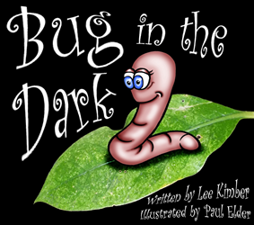

Biographies of those involved with Writers Den Hamilton:
Lee Kimber
Lee lives in Ohaupo where she is in her perfect place, surrounded by trees, overlooking a lake and wetland with a mountain backdrop. Here between teaching contracts, she gardens, gets involved in conservation projects, walks, facilitates two writers' groups and writes. Her children's picture book, Bug in the Dark is on its second print-run and further work has been included in a recently published anthology.
William Mckee
Growing up in Levin, William now lives in Hamilton. He trained in visual arts and is a self-taught programmer and writer. Passionate for speaking about web technologies and copyright. Currently he volunteers for Creative Commons Aotearoa and continues to update his website with artwork.
Ielse Broeksteeg
Ielse Broeksteeg (just say 'Elise') traded the Netherlands for New Zealand when she was 26 and hasn't looked back ever since. Reading and writing are two of her greatest passions along with - inevitably - cats.
Louise Rogers
A UK-born Hamilton resident for over 45 years, Louise (and her husband) have raised a family of four. After reading so many children's stories, she is now having a go at writing her own. She finds it a pleasant break from number crunching (she works part-time in Finance) to try her hand at writing prose. She enjoys meeting with other Den writers, as the the conversation and varied exercises help to keep her motivated.
Michael Burns
Mike has lived and worked in a few countries and is currently living in Hamilton. He enjoys being a surrogate grandfather to children in the neighborhood. He loves to read and write, though mostly for his own pleasure.
Jeff Tayor
Retired pharmacist. Enjoys writing short stories for both children and adults. Also attempts flash fiction stories as small as one hundred words. He finds any kind of writing to be good therapy.
Michael Parry
Michael has lived in New Zealand his whole life and has participated in several local competitions such as White Cloud Worlds. Writing is his main passion with the pursuit of knowledge. One of the youngest at Hamilton Writers Den at the age of 20.